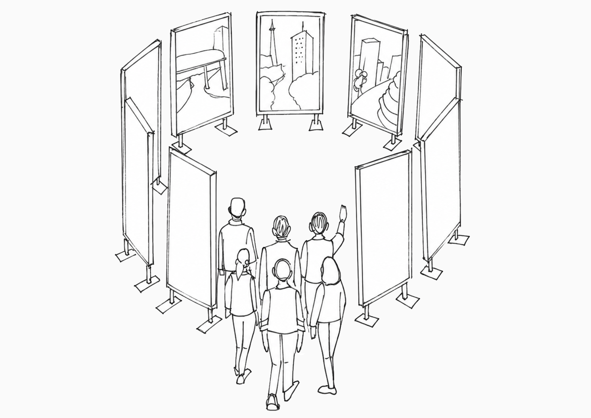
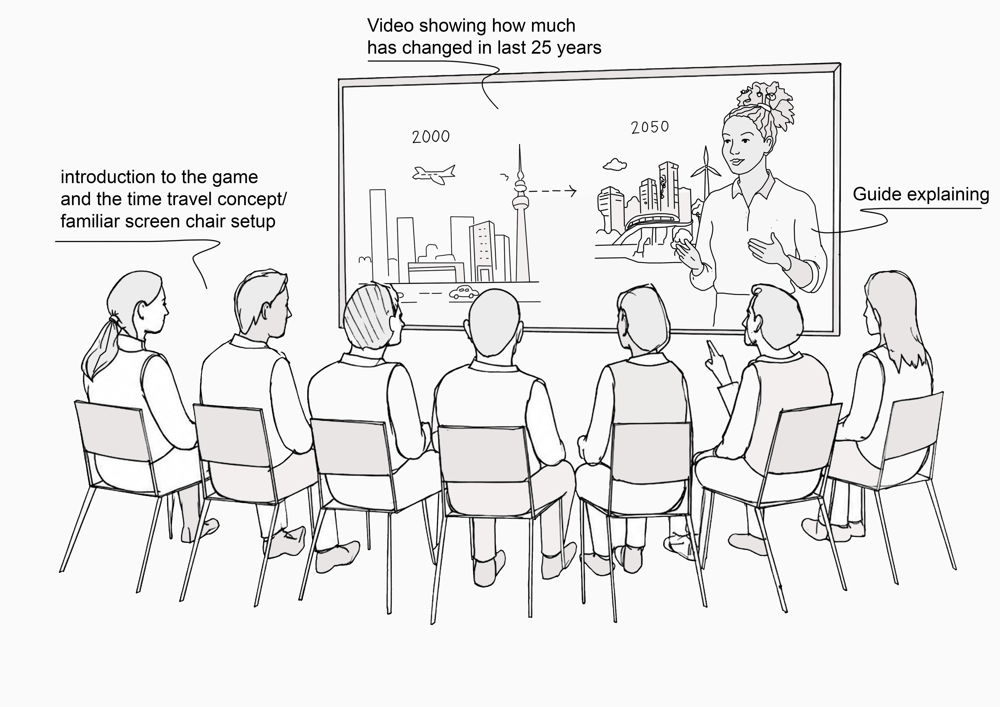
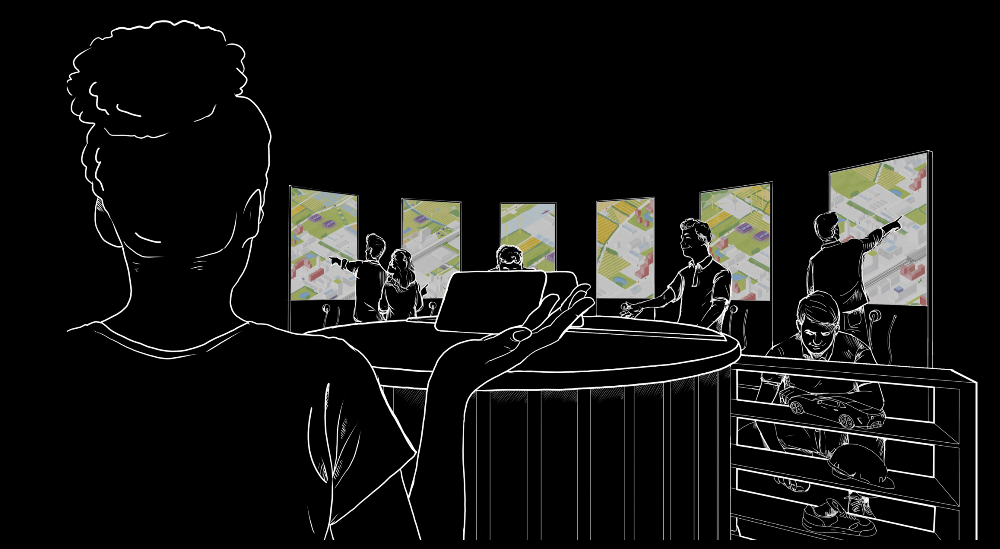
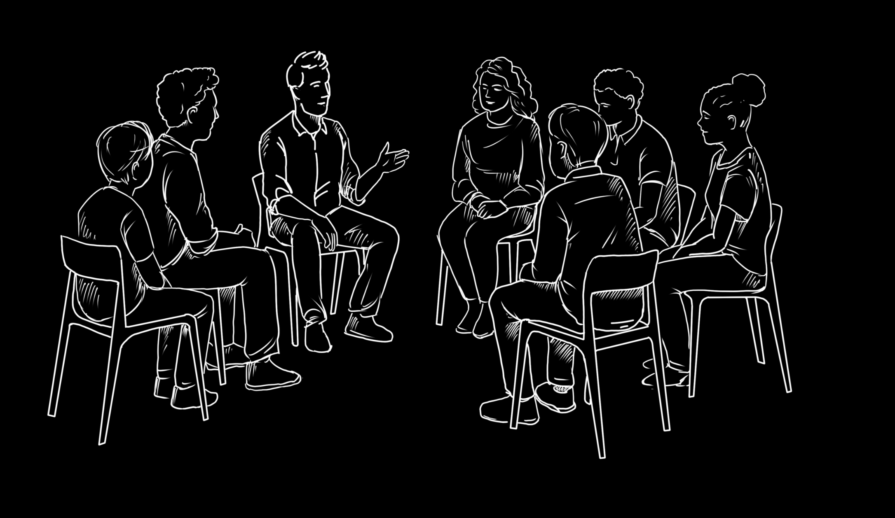

Stad op het Spel
Developed through a collaboration between MAD Movement and MoMoLab, this project originated in the 2025 CIIIC Innovation Impact Challenge on urban development. I joined MAD Movement during the initial open call and contributed to the first concept-development phase after the project progressed to the next round.
Together, we explored how an immersive, collaborative game could help policymakers experience the long-term consequences of their decisions. Inspired by future scenarios for the Netherlands towards 2050, the concept invites teams into a circle of large digital screens, where they encounter policy dilemmas and explore different possible futures.
My contribution focused on researching existing immersive experiences, developing early ideas, and creating the first spatial sketches of the circular screen installation and participant journey. These drawings helped communicate the initial concept before its further development by the collaborating teams.

Early concept sketches
The first drawings explored how participants would move through the experience, interact with future scenarios, and reflect on their decisions as a team.


Further development
Following the initial concept phase, the game was developed further through the collaboration between MAD Movement and MoMoLab. The visualisations below illustrate the later direction of the experience.

